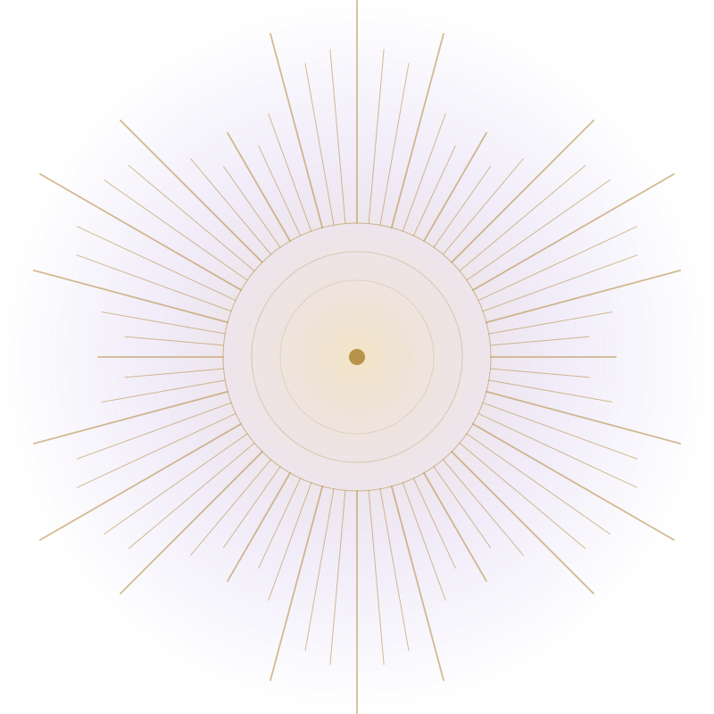
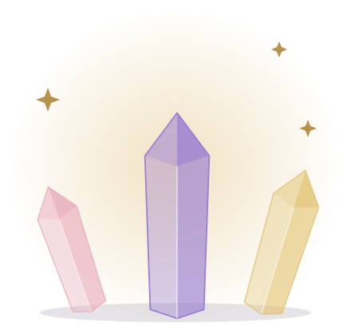
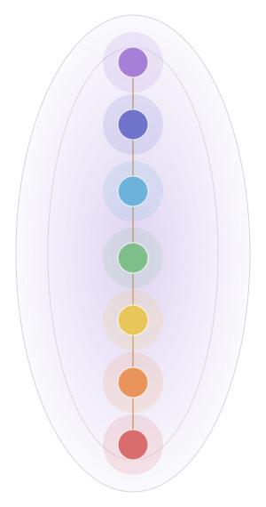
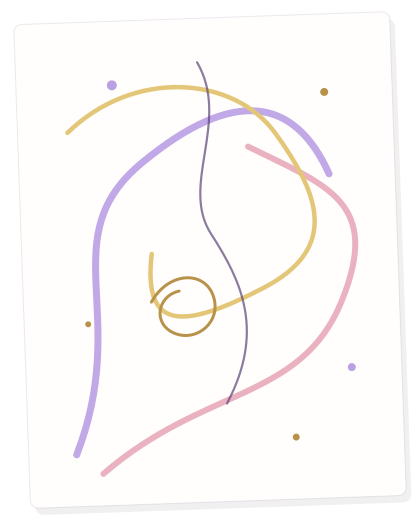

Healing sessions
Explore energy sessions designed to restore your balance and heal the root causes of your states.
Reiki healing packages
A Reiki session is a meditative immersion into the state of full relaxation where life-force energy gently works with your aura, chakras and body.
Each package includes a distant Reiki session and a detailed summary, where I share the feelings and visions that came during the session in a flow state, containing important “keys” for the person’s healing.

-
“Refresh”Single session
A full Reiki session will refill and recharge your body with life-force energy. It will balance all energetic centres, remove blockages and tension.
It’s a perfect choice if you’d like to try Reiki energy for the first time, release stress and let your body enjoy the benefits of complete relaxation.
$80
-
“Align”5 sessions
A series of 5 full Reiki sessions will allow deeper energetic cleansing and progressive healing. Layer by layer the energy will gently release accumulated blocks and give you a sense of vitality.
Select this package if you seek to work on a specific intention and get a deeper sense of inner harmony and balance.
$350
-
“Immerse”10 sessions
Experience profound energetic shifts leading to sustained inner harmony and well-being. Regular exposure to highly vibrational energy will activate the self-healing abilities of your body, align your chakral system and lead not only to internal transformations but also cause changes in your external environment.
$690
-
“Rebirth”15 sessions
This long-term healing program will be a comprehensive path to your True Self. After initial cleansing and balancing, the energy will awaken your consciousness, allow for deep alignment of your Body, Mind and Soul, and open up a new perception of yourself as a creator of your life. Throughout the journey, you will receive support that will help you learn more about yourself and monitor your progress.
$1,000
Crystal healing
Crystals and natural stones contain a huge reserve of natural energy, which has been concentrating in them for thousands, millions and even billions of years. Created by different forces and elements, natural minerals are able to give the accumulated energy to the person with whom they interact.
Life-force energy amplifies the healing properties of crystals and natural stones, which perfectly complement standard Reiki sessions.
Reiki session combined with crystal healing
During this Reiki session I will intuitively select crystals or natural stones depending on the client’s state and intention. Minerals have a steady vibrational frequency, which synchronises the human energy field with their own when they interact. Reiki energy reinforces this process, unlocking the full healing potential of natural stones during the session.
Try this session if you are attracted by crystals and natural stones and would like to experience their healing abilities combined with all the benefits of Reiki.
$90


Diagnostics of aura and body
Diagnostics of aura and body is a comprehensive session which incorporates analysis of your energy field with Reiki healing. This session will allow you to unveil and heal the root causes of your energetic imbalance, be it a childhood trauma, an ancestral program, or a past-life experience.
The diagnostic session takes place with the client on the line (WhatsApp, Telegram), who actively participates in self-healing via guided meditation, practices and visualisations.
Full diagnostics may require 3–4 hours, so for this reason it is split into two or three 90-minute sessions.
Please note: I take clients for diagnostics only after a minimum of 2 Reiki sessions.
Chakral analysis
This diagnostic session will embrace scanning of your subtle bodies and 7 main chakras, which will open up deep reasons of imbalance and allow for immediate healing.
$200
Non-traditional art therapy
Non-traditional art therapy is a practice of energy flows drawing. During this session the master will “read” your current energetic state and reflect it as a drawing on a piece of paper. The initial drawing will allow the master to dive to the deepest layers of your subconscious, opening up the root causes of your state. Healing then happens through guiding of Reiki energy and gradual transformation of the drawing.
The resulting picture becomes a very powerful tool by itself as it reflects your new energetic state and fosters your body to synchronise with it. It is recommended to keep the drawing close to your bed or at the working desk for 21 days to let the new energies fully unpack.
$230

What healing is right for you now?
Send your inquiry describing your current state and intention. We will start with an in-depth complimentary consultation and help you choose the best healing package for you at this time. All packages are flexible and can be designed for your specific needs.